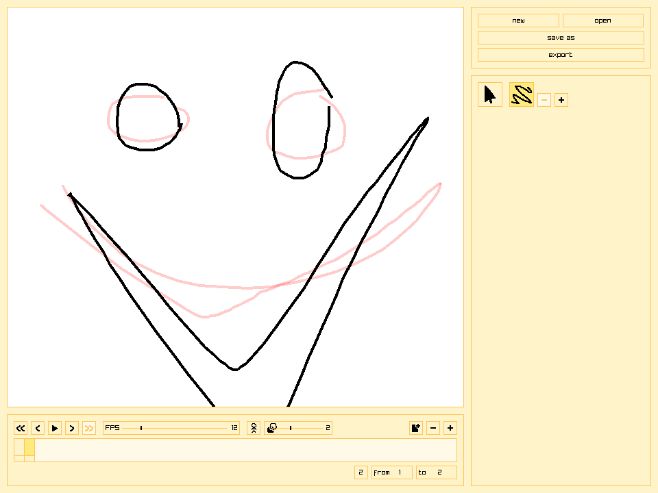
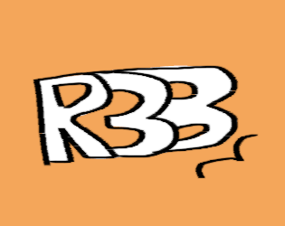

the portfolio of ethan (clancy) turgeon aka freefilesvirus
i was told that "the teachers are the ones looking at [your portfolio for the scholarship]", i assume it will be my own teacher terry, but if it isnt you can use the below info to contact me if you would like anything cleared up
s259075 (teams)
ethan33t@gmail.com (email)
ethan33t@gmail.com (email)
now onto the games...

PHILIP through the wall is a puzzle platformer game that takes about an hour to play through to the end
it took me about 5 months of really on and off development (due to working full time) to complete
it has over 30 levels, 3 types of weapons, 4 types of stage hazards, and ends in a climactic* boss fight
*allegedly climactic
fun fact: it happens to be the full version of a game jam game that i had submitted for the original game changer scholarship (that i think won me it)
it took me about 5 months of really on and off development (due to working full time) to complete
it has over 30 levels, 3 types of weapons, 4 types of stage hazards, and ends in a climactic* boss fight
*allegedly climactic
fun fact: it happens to be the full version of a game jam game that i had submitted for the original game changer scholarship (that i think won me it)
The Michael Experience™ is an in progress game contributed to by a dozen folks, but with a dedicated 4 doing consistent work
one day design ryan said a really boring and not funny joke while we were looking for our classmate evil michael, "what if we made a game about looking for michael". naturally i followed through, so he followed through, and we got together a small team
in the game you wander around a digital aie while being taunted from a distance by evil michael while exploring over a dozen unique rooms
i act as the lead programmer
i created the michael npc that runs away when you get too close and taunts you from afar
i created a system to only load the experience rooms when needed
i also created the website that clicking on the big image leads to. the game isnt finished yet, but will be put onto the website "eventually" with evil michaels permission
one day design ryan said a really boring and not funny joke while we were looking for our classmate evil michael, "what if we made a game about looking for michael". naturally i followed through, so he followed through, and we got together a small team
in the game you wander around a digital aie while being taunted from a distance by evil michael while exploring over a dozen unique rooms
i act as the lead programmer
i created the michael npc that runs away when you get too close and taunts you from afar
i created a system to only load the experience rooms when needed
i also created the website that clicking on the big image leads to. the game isnt finished yet, but will be put onto the website "eventually" with evil michaels permission

yellowsoftware
yellowsoftware was a library i was building on raylib in c++ to create really basic software
everything was made up of ui "control" classes based loosely off of godots control nodes
the base library came with a bunch of essentials like button, slider, label, icon, etc with a point of modularity so it would be easy to create more control classes
it has some functions for easily writing to config files, either for program specific ones or any yellowsoftware
the fun gimmick with yellowsoftware are the ylwtheme files made up of 5 colors
you drag a ylwtheme file onto any yellowsoftware and all the controls change to match the new colors
it is automatically applied to any yellowsoftware program you open later
it would also change yellow in the executable name to the filename of the ylwtheme file, so if you drag drpepper.ylwtheme yellowpaint would turn into drpepperpaint
the image to the left is yellowpaint, the only full piece of software i made with it
yellowpaint is a rudimentary vector drawing software that can export out to a png sprite sheet
i dont plan on making more with it or releasing it because its frankly kind of useless. i might find it worth it if it wasnt built on top of raylib, but ehhh. it was really fun to work on nonetheless, and i still use yellowpaint personally
everything was made up of ui "control" classes based loosely off of godots control nodes
the base library came with a bunch of essentials like button, slider, label, icon, etc with a point of modularity so it would be easy to create more control classes
it has some functions for easily writing to config files, either for program specific ones or any yellowsoftware
the fun gimmick with yellowsoftware are the ylwtheme files made up of 5 colors
you drag a ylwtheme file onto any yellowsoftware and all the controls change to match the new colors
it is automatically applied to any yellowsoftware program you open later
it would also change yellow in the executable name to the filename of the ylwtheme file, so if you drag drpepper.ylwtheme yellowpaint would turn into drpepperpaint
the image to the left is yellowpaint, the only full piece of software i made with it
yellowpaint is a rudimentary vector drawing software that can export out to a png sprite sheet
i dont plan on making more with it or releasing it because its frankly kind of useless. i might find it worth it if it wasnt built on top of raylib, but ehhh. it was really fun to work on nonetheless, and i still use yellowpaint personally
R3B, or robot breakneck builder battler, is an in progress game about creating little battle bots to fight the little battle bots created by your friends then iterating on the design to fight again
i act as the team and programming lead
i created a system to place different parts on your robot that can be controlled in a fight
i used unreals networking tools to get a smooth multiplayer experience
i act as the team and programming lead
i created a system to place different parts on your robot that can be controlled in a fight
i used unreals networking tools to get a smooth multiplayer experience

R3B

Magic Mason is a game where you conjure traps for yourself to manuever around and grab coins to conjure more traps to hurt yourself on
i acted as the lead programmer
i created a system for easily creating platforms which can be build off of other platforms at specific attachment points
i created a system that offers different platforms around affordability
i created a system to swap between platforming and building on the fly
many systems in this game...
i acted as the lead programmer
i created a system for easily creating platforms which can be build off of other platforms at specific attachment points
i created a system that offers different platforms around affordability
i created a system to swap between platforming and building on the fly
many systems in this game...
Corn Run is an endless runner game where you avoid spooky hazards
i acted as the lead programmer
i set up a system to procedurally stitch level pieces together
i created an enemy that would persistently chase you through the map
i created another basic enemy that would poke you if you ran through too fast without crouching
i acted as the lead programmer
i set up a system to procedurally stitch level pieces together
i created an enemy that would persistently chase you through the map
i created another basic enemy that would poke you if you ran through too fast without crouching


worm desktop pet is my pride and joy
development was very turvy, i saw no visions of a worm when i began
you can grab the worm and smack it around your screen or pin one of its points anywhere
it makes sounds when stretched or smacked on stuff
development was very turvy, i saw no visions of a worm when i began
you can grab the worm and smack it around your screen or pin one of its points anywhere
it makes sounds when stretched or smacked on stuff
BULLETHELI is a bullet hell game where you control a fly with your cursor and avoid all the things that tend to kill flies
i acted as the solo developer
it was made without an engine using c++ and raylib
i set up systems for managing and deleting objects
i set up systems for drawing objects with child heirarchy and z order
i designed 9 unique hazards
i balanced difficult settings to modify score appropriately
i acted as the solo developer
it was made without an engine using c++ and raylib
i set up systems for managing and deleting objects
i set up systems for drawing objects with child heirarchy and z order
i designed 9 unique hazards
i balanced difficult settings to modify score appropriately

my personal website i use to collect my work/thoughts/???
at first glance its just a website, which is slightly impressive(?) technically but theres a lot of js junk behind the scenes
you mightve noticed on this page the ↗s on external links, which are automatically generated
most of the pages have a sidebar on the left with a bunch of links around arranged prettily, thats made on the fly with a list of links
nobody will ever notice this because i havent published a ylwtheme file anywhere, but if you drag a ylwtheme file onto any yellow lookin page on this website (including this one) all the colors will change. if you dont believe, heres a zip full of ylwtheme files. just drag them into the window
freefilesvirus is the alias i publish stuff online under, its a name ive used for so long im desensitized to how scary it sounds
at first glance its just a website, which is slightly impressive(?) technically but theres a lot of js junk behind the scenes
you mightve noticed on this page the ↗s on external links, which are automatically generated
most of the pages have a sidebar on the left with a bunch of links around arranged prettily, thats made on the fly with a list of links
nobody will ever notice this because i havent published a ylwtheme file anywhere, but if you drag a ylwtheme file onto any yellow lookin page on this website (including this one) all the colors will change. if you dont believe, heres a zip full of ylwtheme files. just drag them into the window
freefilesvirus is the alias i publish stuff online under, its a name ive used for so long im desensitized to how scary it sounds
this was done in one go because im already late to submitting for the scholarship
i didnt write these in order, but i think its obvious which ones i started with and which ones i made at the end
i have shamefully little to show that i have worked on outside of school. ive been going to the school every day its open for a few weeks now, im dedicated to what im workin on and really trying to take advantage of what i have here
i really appreciate the grace of the head of school, ursula frank, for allowing me to submit this past the deadline
i appreciate whatever teacher read through this and is judging my work for the scholarship
this school means a lot to me and i work hard at it, your consideration for this scholarship is incredibly meaningful and important to me!